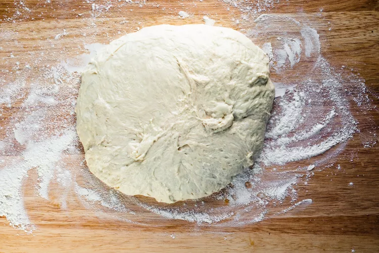
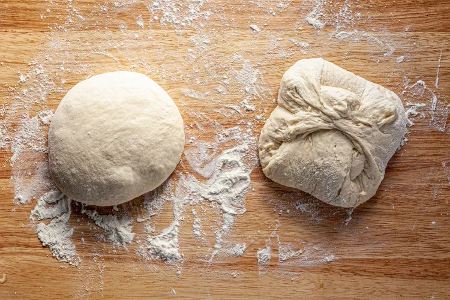
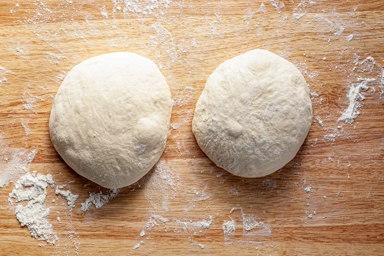
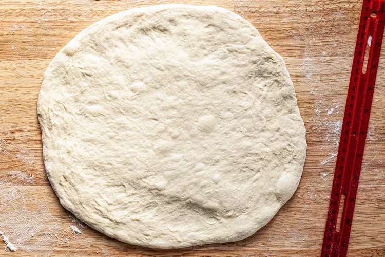
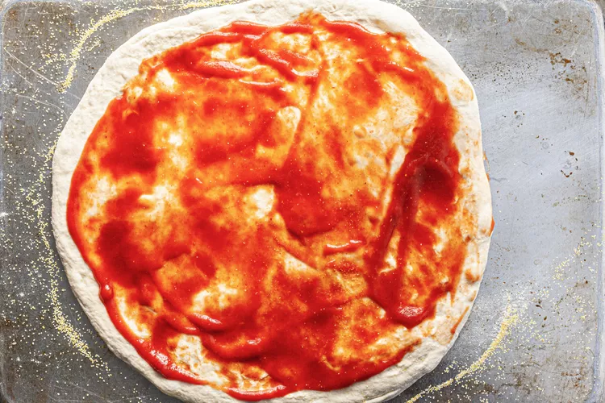
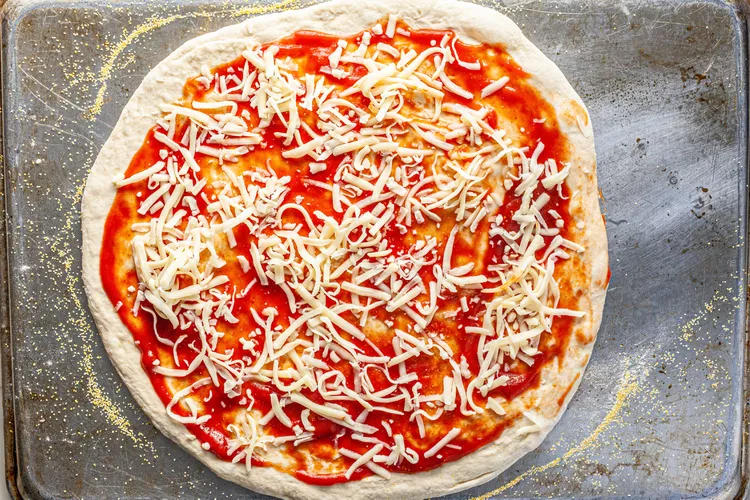
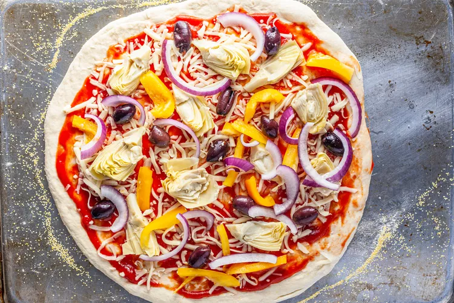
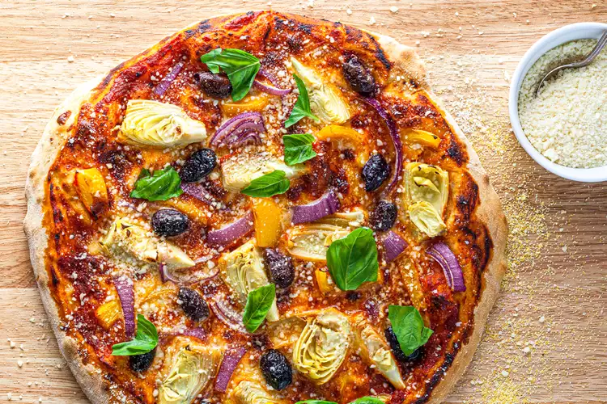
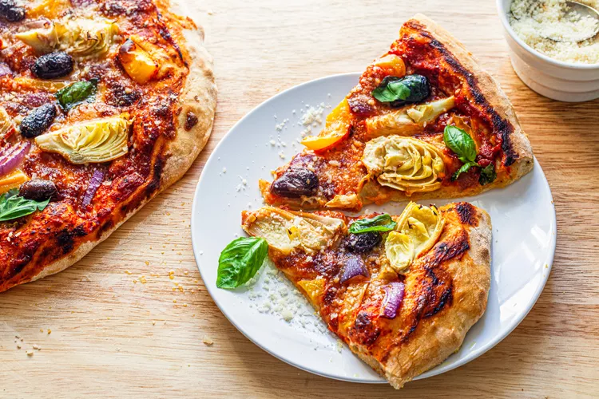

Veggie Pizza
This is our ultimate oven-baked veggie lover’s pizza. Red sauce, mozzarella, red onions, olives, bell peppers, artichokes, and a golden crust. It’s all here!

Ingredients
- 2 (1-pound) store-bought or homemade pizza dough
- All-purpose flour, for dusting the countertop
- Cornmeal, to dust the peel or baking sheet
- 3/4 cup store-bought or homemade pizza sauce
- 1 cup (4 ounces) grated mozzarella cheese
- 1/2 yellow bell pepper, seeded and sliced
- 1/2 small red onion, sliced
- 1/2 cup pitted kalamata olives, halved if large
- 1 (14-ounce) can artichoke hearts packed in water, drained and quartered
- 1/4 cup grated Parmesan cheese
- Olive oil, for garnish
- Basil leaves, for garnish
Method
-
Preheat the oven to 450ºF:
- Set a rack about eight inches below the broiler element. If using a pizza stone, set it on the rack. Preheat the oven to 450ºF for 30 minutes to get the oven very hot.
-
Divide and shape the dough into balls:
- Generously sprinkle your kitchen counter with flour. Turn the dough onto it. If you made a 2-pound pizza dough recipe, cut the dough in half. You want 2 pieces of dough that are each about 1 pound. Each piece will make a pizza
- 
- Working with one piece (1 pound) of dough at a time, fold all four corners of the dough in towards the center. Turn the dough over and cup your hands around the dough. Rotate it once or twice to form a smooth ball. If the dough is very sticky, flour your hands and sprinkle the dough with a little more flour. Shaping the dough into balls this way makes it easier roll them into rounds.
- 
- Repeat with the second piece of dough. Cover 1 piece of dough with a dishtowel. You will top and bake 1 pizza and as it cooks, you will shape and top the second pizza.
- 
-
Shape the dough:
- Generously sprinkle your kitchen counter and the dough with flour. With your fingertips, press the dough ball down to form an 8-inch round. Continue to press and stretch the dough until it is 12 inches in diameter.
- If the dough springs back and is difficult to stretch, cover it with a dishtowel and let it rest and relax for about 10 minutes before continuing to stretch it.
- 
-
Transfer the dough to a pizza peel or baking sheet:
- Generously sprinkle a pizza peel or a rimless baking sheet with cornmeal. You will build the pizza on the peel or the baking sheet, then, if transferring the pizza to a pizza stone, you will slide it off the peel onto the stone. The cornmeal prevents sticking on either surface.
- Use your hands to transfer the stretched dough onto the peel or baking sheet. If needed, stretch the dough out to make it round again.
-
Change the oven from baking to broiling
- Ten minutes before baking the pizza (while you assemble the topping) switch the oven from bake to broil. Preheat the broiler. This helps the oven get really, really hot. The pizza will be baked under the broiler.
-
Add the toppings:
- Spoon half of the sauce (a little more than 1/4 cup) onto the crust and spread it in an even layer using the back of the spoon. Sprinkle half of the mozzarella (about 1/2 cup) over the sauce.
- 
- 
- Arrange half the peppers, onions, olives, and artichokes over the dough.
- 
-
Bake the pizza:
- If using a pizza stone: Use a quick, jerking motion to slide the pizza off the peel onto the stone. Bake for 5 to 7 minutes, or until the cheese bubbles and the dough is browned. The cook time depends on the heat of your oven, so peek occasionally. Use the peel to remove the pizza from the oven and slide it onto a cutting board.
- If using a baking sheet: Place the pizza into the oven and bake for 7 to 9 minutes, or until the cheese bubbles and the dough is golden. The cook time depends on the heat of your oven, so peek occasionally. Pizza on a baking sheet will take longer to bake than it would on a pizza stone. Remove the pan from the oven and slide it onto a cutting board
- While the first pizza bakes, assemble the second pizza with the remaining dough and toppings. After the first pizza comes out of the oven, preheat the pizza stone and oven for the second pizza, and bake following the same methods.
- 
-
Slice and serve:
- Sprinkle each pizza with Parmesan, top with the basil leaves, and drizzle with olive oil. Slice and serve it warm.
- 